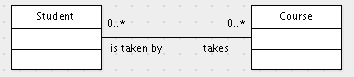

Consider the many-to-many association between students and courses.

Suppose that, on average, each student takes 4 courses. The actual number of courses for a particular student could be as few as no courses and there is no specified upper bound on the number of courses. How many students take no courses at all? The usual way to estimate this is with a probability model called the Poisson process. While the Poisson process is a complicated model in general, it is very simple in this case: e-4 = 0.0183. In other words, about 2% of all students take no courses at all.
In general, if one has a many-to-many association between two classes A and B, and if each A object is related to n B objects, on average, then the number of A objects that are unrelated to any B objects is approximately equal to the fraction e-n of all A objects. In other words, the estimated selectivity is e-n.
© 2010 Ken Baclawski. All rights reserved. Redistribution and use in source and binary forms, with or without modification, are permitted provided that redistributions and uses retain this copyright notice.